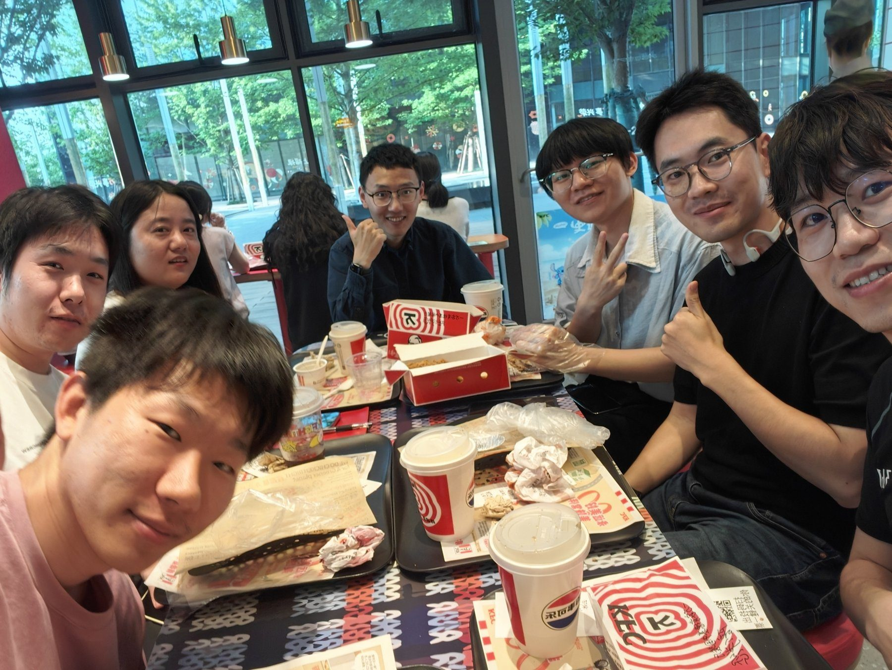

这一次，我们聊了什么
AI 已经展现出复杂推理、语言与生成能力，但生物智能如何产生、意识与表征如何形成，以及大脑如何高效学习与长期对齐，仍缺乏统一理解。本次讨论反过来追问：AI 的发展能如何帮助我们理解生物智能、认知机制与对齐问题？
话题展开
- 神经生物学还能继续为 AI 提供什么灵感？
- 大模型是在“理解”，还是在形成另一种统计智能？
- 生物学习的能量效率、持续学习、主动探索与记忆系统，对下一代 AI 有哪些启发？
- AI 能否成为研究意识、认知与智能本质的新工具？
- “对齐”问题是否在本质上也是一个认知科学问题？
